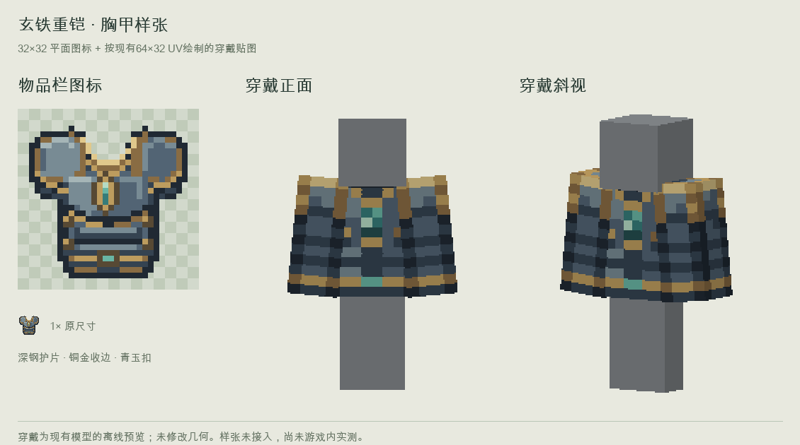
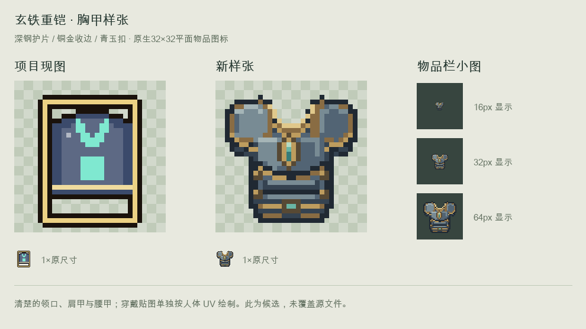
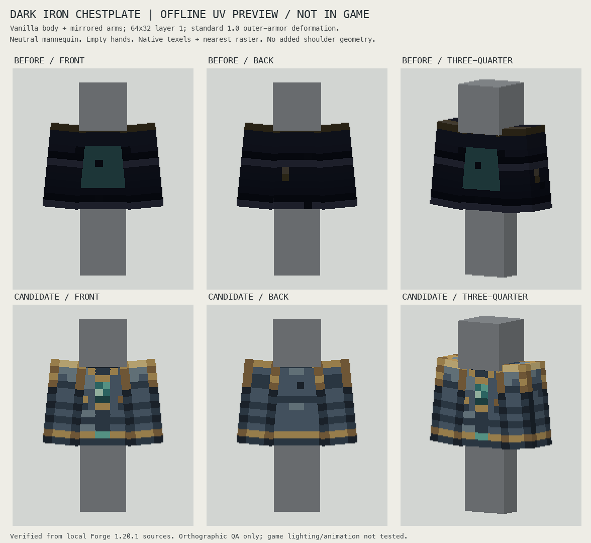
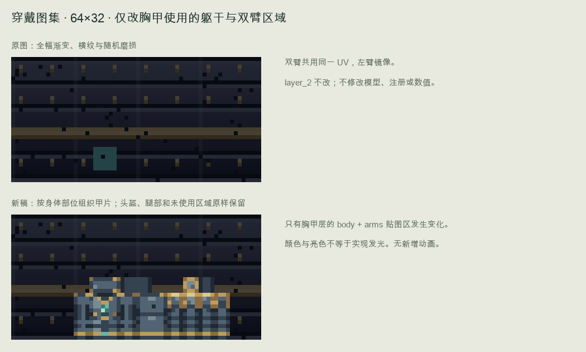

先确认这一件。清楚的领口、肩甲和胸腹分片，深钢主体、铜金收边、小青玉扣。32×32图标与64×32穿戴贴图分别制作。


来自本机Minecraft 1.20.1实际模型定义和UV。标准外甲膨胀1.0，双臂共享并镜像同一贴图区，没有新增肩甲几何；非游戏截图。


只改变胸部、双臂的576个像素，其他区域和layer_2不变；所有源文件已备份并保留。无动画或新增发光。未启动游戏或同步实例。
v13铜镜风格已确认。按你的要求，等这件盔甲确认后再持续处理剩余内容，核对记录并保留之前做好的物品和方块。